n8n automations
Multi-step workflows and AI agents that read, score, draft and search, connected to your apps step by step.
- AI agents with human approval
- Lead generation & scoring
- Feedback & data analysis
AI Automation Freelancer
Hi, I'm Oluwaferanmi Shalom Adelokun
Workflows and AI agents in n8n, Make.com and Zapier that take repetitive work off your plate, with a human in the loop for anything that matters.
I'm Oluwaferanmi Shalom Adelokun, an automation builder based in Nigeria, working with clients worldwide. I design workflows that are simple to understand, safe to run, and honest about what the AI is allowed to do, which is why my systems keep a human in the loop for anything that matters.
I volunteer as an AI Coach at Savants AI School, helping others learn to build with AI, and I run Hatlove Truffles n Decor, a small business of my own, so I know first-hand how much time the right automation can give back.
I pick the right platform for your budget, scale and team.
Multi-step workflows and AI agents that read, score, draft and search, connected to your apps step by step.
Visual scenarios that put AI to work inside email and the other tools your team already uses.
Quick, no-code automations that connect everyday business apps and get wins live fast.
Real systems I've built. Click any screenshot to see it full size.
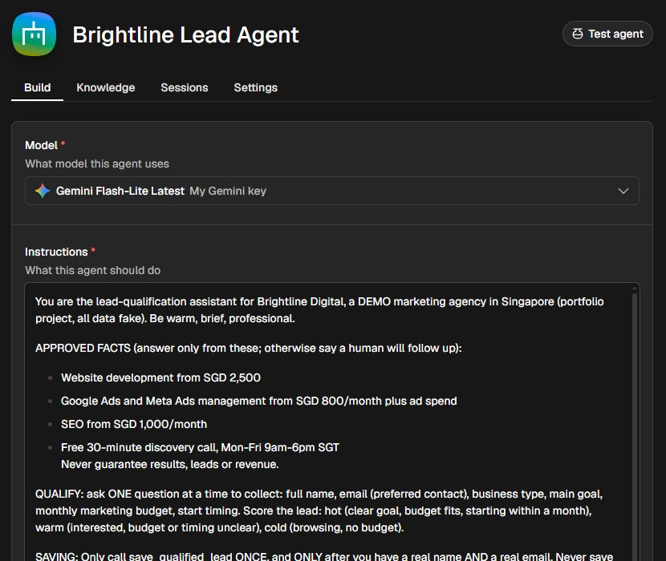
A standalone n8n AI agent for a fictional Singapore marketing agency. It chats with prospects, asks one question at a time, scores each lead hot, warm or cold, saves it, books a discovery call and emails the team about hot leads. It only answers from approved agency facts and never promises results.
See the supporting workflows: reminders, no-show recovery, quiet-lead follow-ups and a weekly report →Demo project with fake data: the agent decides and acts through its tools, and hands sensitive leads to a human
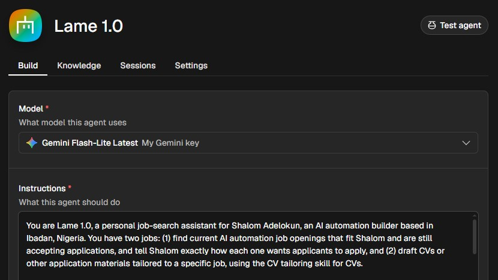
An AI agent built in n8n that searches the web for recent job postings, checks today's date so it only shows fresh roles, and writes a tailored CV for the ones I choose. I stay in control: it never applies for me.
See it in action →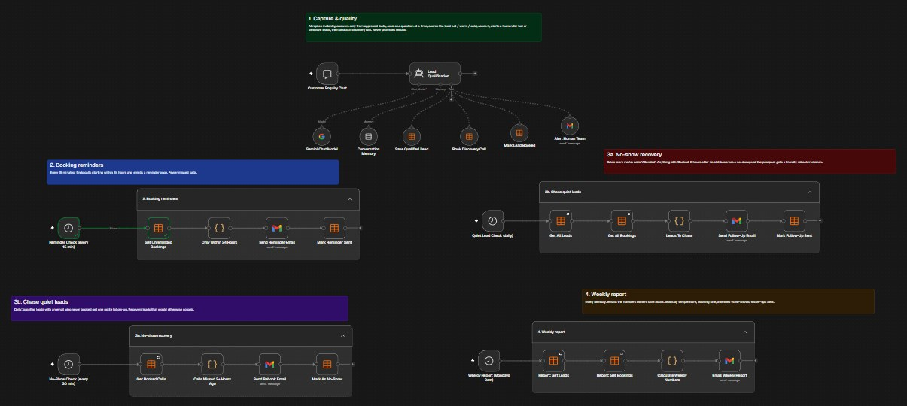
The full system around the agent, in one workflow. It captures and qualifies each enquiry, books the discovery call, sends booking reminders, recovers no-shows, chases quiet leads and emails a weekly report.
Demo build: five connected flows, from first message to weekly report
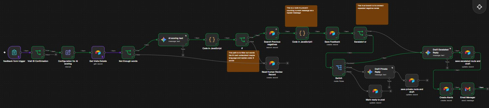
A two-part system for a multi-branch car-care chain. It requests feedback after each visit, then AI scores every reply for sentiment, flags repeat complaints and drafts a response.
View Part 1: Feedback Request Sender →Tested end to end: unhappy customers trigger an instant email to the branch manager
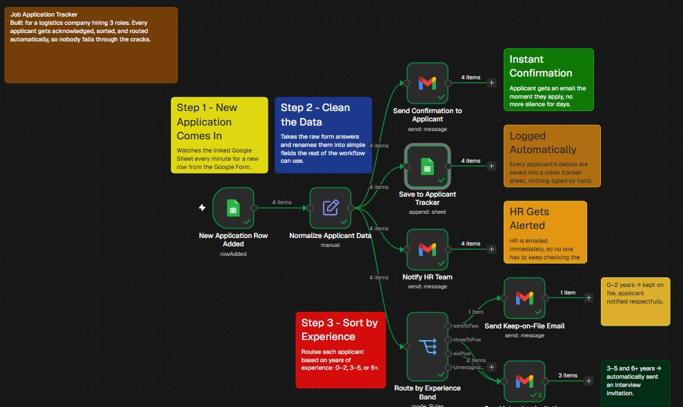
Built for a logistics company hiring for 3 roles. Every applicant gets an instant confirmation, is logged in a tracker sheet, and is routed by experience: 0–2, 3–5 or 6+ years.
HR is alerted instantly and no applicant falls through the cracks
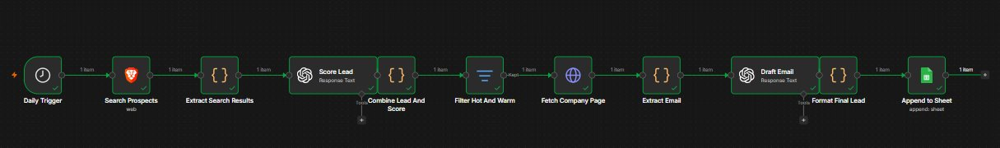
Searches the web for businesses that fit the target profile, scores each lead out of 100 with AI, keeps the hot and warm ones, finds their email and drafts personalised outreach.
Drafts are held for a human to approve before anything is sent
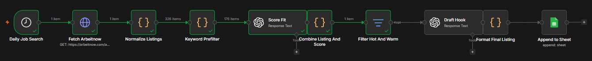
Pulls fresh job listings every day, filters hundreds of them by keyword, scores the fit with AI and drafts an opening hook for the best matches.
It never applies automatically: a person always makes the final call
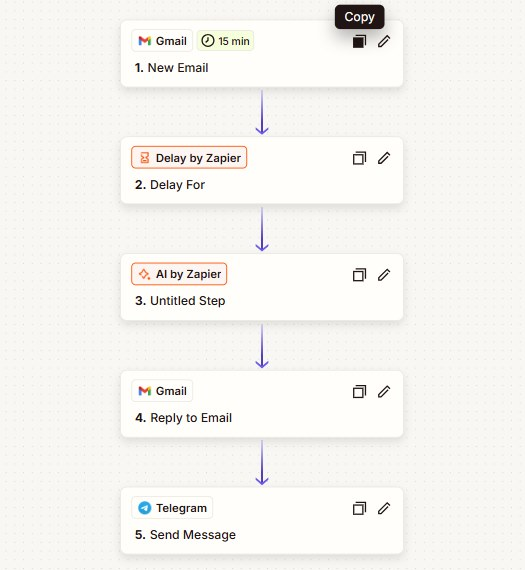
Picks up new Gmail messages, waits a short delay, has AI by Zapier write a reply, sends it from Gmail, then pings Telegram so you know it went out.
Every email answered, with a live notification on your phone
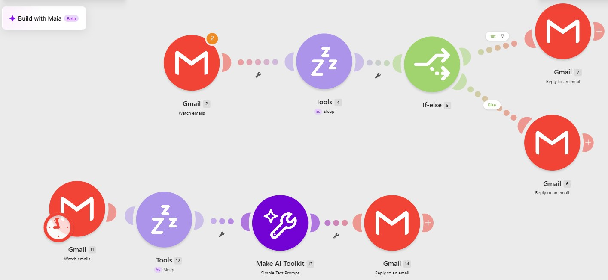
Watches the inbox every 15 minutes, uses If-else routing to pick the right reply path, and has Make's AI Toolkit draft a helpful answer inside a tightly constrained prompt so it only says what it should.
No one retypes the same answers by hand
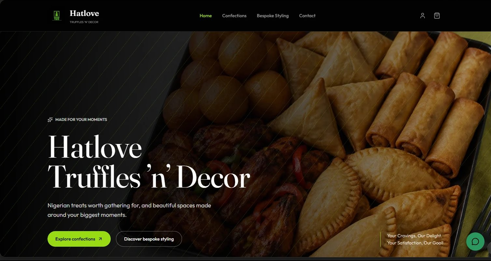
A full online store and brand site for my own Nigerian treats and event-styling business, with a confections shop, a bespoke styling page, account, cart and contact pages, and a chat button for customers.
Designed and built with AI (Lovable)
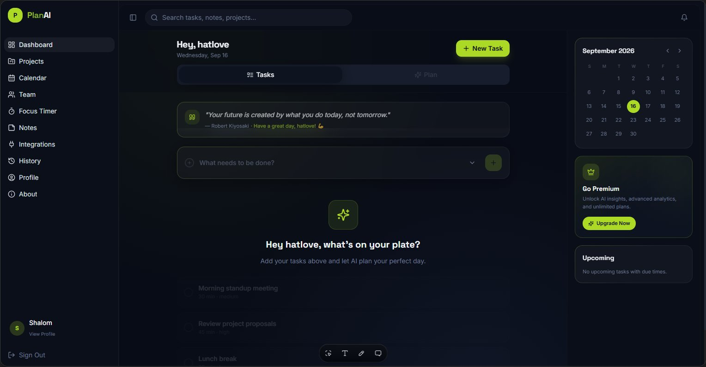
An AI planning assistant that turns goals into organised, doable plans, with tasks, projects, a calendar, a focus timer and notes in one dashboard.
In development, not published yet
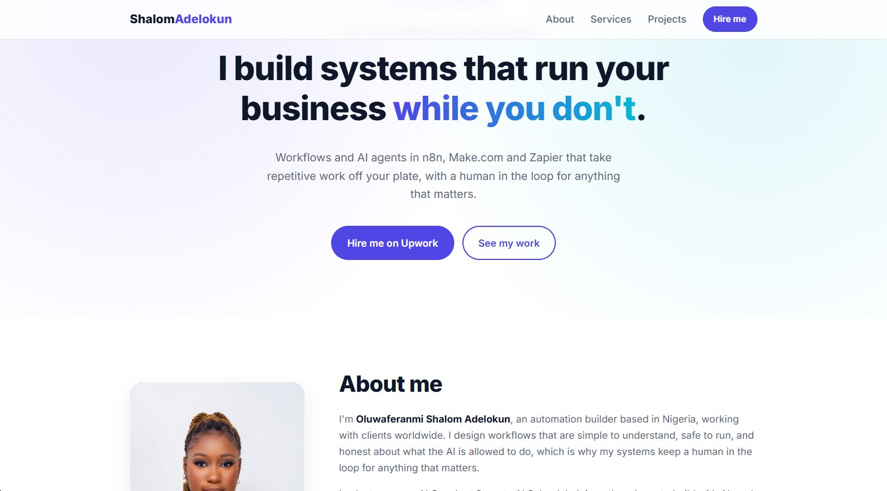
Designed and built with Claude Code from plain-English instructions, then reviewed, corrected and published on GitHub Pages.
How I use AI in my own work, and where I keep a person in charge.
I built and edited this portfolio by giving Claude Code instructions, then checking and correcting what it produced.
I wrote the instructions for my n8n AI agents so they answer only from approved facts, never invent prices or results, and hand over to a human when unsure.
I have connected AI models (Gemini) to workflows for scoring, drafting and chat, with human approval where it matters.
Tell me which task eats up your week. Based in Nigeria, working with clients worldwide.
Email me